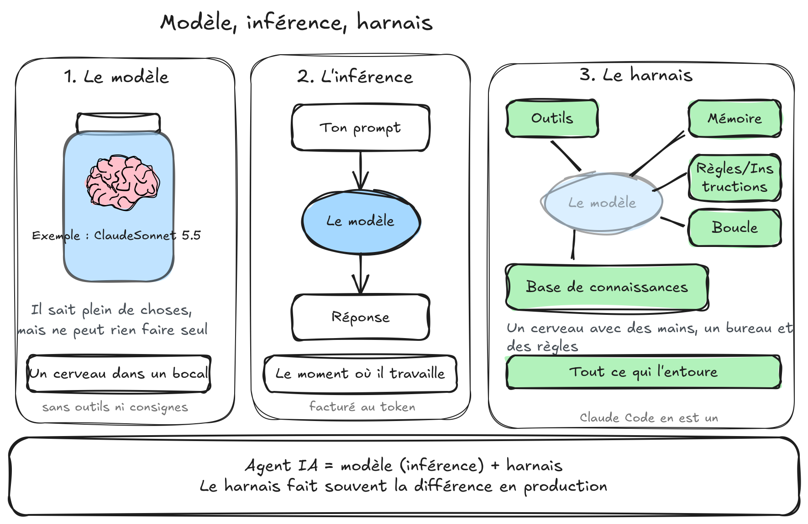

Automatisation et IA agentique · Maison Lagarrigue · Jour 1
Assistant, automatisation, agent : savoir quoi utiliser, et quand
Comprendre, mesurer et choisir.
17 novembre 2026 · 9h00 à 17h00 · Marie Jolly, Summit Flow
Le parcours complet
Cinq jours, une montée par étapes
Jour 1 · 17 nov. 2026
Comprendre et choisir
Toute l'équipe. Les trois logiques, quand utiliser quoi, et le lancement de la grille d'audit.
Intersession · 9 semaines
Observer son travail
Jusqu'au 22 janvier. Chaque pôle décrit trois à cinq tâches dans la grille. Point d'étape mi-décembre.
Jours 2 à 4 · janv. à mars
Ateliers par pôle
22 janvier, 26 février, 15 mars. Commerce, RH et compta, communication : on construit et on teste.
Jour 5 · 26 mars 2027
Conformité et charte
Responsables de pôle. RGPD, éthique, charte d'usage de l'entreprise, feuille de route.
Aujourd'hui
Le programme du jour 1
- 9h00Point de départ et repères pour tous
- 9h45Assistant, automatisation, agent
- 10h45Pause
- 11h00Quand utiliser quoi
- 12h30Déjeuner
- 13h30Démonstrations, puis à vous
- 15h00Pause
- 15h15Limites, investissement, choix d'un outil
- 16h00Garde-fous essentiels
- 16h30Lancement de l'intersession
Tour de table
D'où part chacun ?
- Avez-vous suivi la journée de mars ?
- Qu'est-ce que vous utilisez déjà aujourd'hui ?
- Qu'est-ce qui a coincé ?
- Qu'attendez-vous de ce parcours ?
Retour sur mars
La journée de mars, ce qui reste
Ce qui a été posé
- Ce qu'est un assistant conversationnel
- Une quinzaine de situations repérées ensemble, pôle par pôle
- Des premiers temps estimés : jusqu'à 4 jours par mois pour certaines tâches
Ce que vous avez demandé
- Moins de vocabulaire technique
- Plus de pratique sur vos outils : Outlook, Excel
- Alors aujourd'hui, chaque notion part d'une de vos situations
Retour sur mars
Vos situations, celles de mars
Commerce
- Commissions des vendeurs itinérants 4 h
- Contrôle des études de prix, vente et reprise
- Estimation des reprises
- Ciblage de clients pour les démonstrations
- Trouver un produit chez un fournisseur
RH et compta
- Variables de salaire 1,5 à 2 j
- Vérification des paiements clients pour les commissions
- Trésorerie quotidienne, factures reçues par e-mail
- Saisie des pointages, du papier au logiciel
Communication
- Planning de communication 4 j par mois
- Optimisation des bases de données pour la communication
Direction
- Création de tableaux de bord
- Analyse des tableaux de bord
- Présentations PowerPoint
Temps estimés par l'équipe en mars, à préciser dans la grille d'audit.
Retour sur mars
Ce que vous en avez retenu
On écrit en direct ce que dit la salle. On y revient en fin de journée.
Rappel express
Vrai ou faux ?
L'IA générative va chercher la bonne réponse dans une base de données.
Elle peut inventer une source qui n'existe pas.
Plus la consigne est précise, plus la réponse est utile.
Ce que je tape peut servir à améliorer le modèle.
Rappel commun
Une IA générative, comment ça marche
Infographie à insérerInfographie Clarity « Comment fonctionne l'IA » (comment-fonctionne-ia.png)
Infographie à insérerInfographie Clarity « Comment l'IA apprend » (comment-ia-apprend.png)
Rappel commun
L'IA est déjà dans vos outils
Ce n'est plus un site à part : elle arrive dans ce que vous ouvrez chaque matin.
Trois logiques différentes
L'assistant répond. L'automatisation exécute. L'agent poursuit un objectif.
Le bon choix dépend de la tâche, pas de l'outil à la mode.
1. L'automatisation
Tout part d'un déclencheur
Un déclencheur (le « trigger »), puis toujours la même suite d'actions. Deux familles :
Le temps
Chaque matin, le tableau de trésorerie se met à jour. Chaque fin de mois, les variables de salaire sont préparées.
Un événement
Une facture arrive par e-mail, un pointage est saisi, une demande de démonstration tombe.
Pour les curieux · 1. L'automatisation
Le webhook, c'est la sonnette
1. L'automatisation
Elle exécute, toujours pareil
Aucune réflexion, et c'est sa force : même entrée, même résultat.
Un scénario Make
Un événement déclenche une série d'actions, montée visuellement.
Capture à fournirCapture d'un scénario Make
Un script Apps Script
Une petite routine qui tourne seule dans un tableur.
Capture à fournirCapture du script Apps Script et de son résultat
Chez vous
L'équivalent dans Microsoft 365 se monte avec les outils de l'environnement, selon les licences.
2. L'assistant et l'agent
Mêmes pièces, même anatomie
Instructions
le super prompt : rôle, règles, ton
Base de connaissances
la bibliothèque : documents, procédures
Outils et connecteurs
les bras et les jambes : lire, écrire, envoyer
Le modèle
le cerveau
démo en directCompétences
les skills : des savoir-faire prêts à l'emploi
Mémoire
ce qu'il retient d'une fois sur l'autre
Boucle
il essaie, vérifie, recommence : gérée par l'outil
2. L'assistant et l'agent
Les bras et les jambes : outils, connecteurs, plugins
Le connecteur
L'accès à une application : Outlook, SharePoint, Teams. Sans lui, l'IA ne voit rien de vos outils.
L'outil
Une action précise qu'elle peut faire : lire un courriel, créer un fichier, chercher une information.
Le plugin
Un paquet prêt à installer, qui regroupe un ou plusieurs outils pour un usage donné.
Les mots changent d'un éditeur à l'autre. Ce qui compte : à quoi l'IA a accès, et ce qu'elle a le droit de faire.
2. L'assistant et l'agent
Les compétences, des fiches recettes
Une compétence (« skill ») regroupe une façon de faire, des consignes et parfois des fichiers modèles.
L'IA ne la charge que quand la tâche le demande : elle reste légère le reste du temps.
Exemple
- Rédiger un compte rendu au format de l'entreprise
- Avec le modèle de document
- Et les règles de nommage du fichier
2. L'assistant et l'agent
Une seule vraie différence : le déclencheur
L'assistant
DéclencheurToi, à chaque question.
L'agent
DéclencheurUn objectif, un événement ou un horaire. Il enchaîne seul.
Ce que je constate sur le terrain : l'usage n°1
Un super moteur de recherche
On pose une question, on attend une réponse. On s'en sert en mode assistant, mais on oublie de l'équiper.
On oublie le contexte
Qui je suis, pour qui, avec quelles règles. Sans ça, la réponse reste générique.
On oublie la connexion
Elle ne voit ni Outlook, ni Excel, ni vos documents. On recopie tout à la main.
On oublie la mémoire
Chaque fois, on repart de zéro et on réexplique.
Résultat : on passe parfois plus de temps qu'à faire la tâche soi-même.
2. L'assistant et l'agent
Un assistant complet ou dégradé
| IA « toute nue », mémoire désactivée | Chatbot de site, sans mémoire | Projet Claude, assistant Copilot | |
|---|---|---|---|
| Instructions | seulement ta question | configurées | configurées |
| Connaissances | aucune de chez vous | le contenu du site | tes documents |
| Mémoire | repart de zéro | repart de zéro | selon les réglages |
| Outils | selon l'outil | selon la configuration | selon la licence |

Ce qu'en disent les éditeurs
Trois définitions, trois sources
« Des systèmes où le modèle et les outils sont orchestrés selon des chemins définis à l'avance. »
Anthropic, à propos des workflows, déc. 2024
« Des systèmes où le modèle dirige lui-même ses étapes et l'usage de ses outils. »
Anthropic, à propos des agents, déc. 2024
« Un assistant IA qui suit vos instructions, s'appuie sur les sources de connaissances connectées et utilise des outils pour agir. »
Microsoft, à propos des agents Copilot Studio
Traductions libres. Sources : Anthropic, Building effective agents, 19 décembre 2024 ; Microsoft Learn, Overview, Microsoft Copilot Studio.
Trois logiques différentes
Qui garde la main ?
L'assistant en vrai
Il répond, tu gardes la main
Tu lui poses une question ou tu lui confies un texte. Il propose, tu décides.
Chatbot du site Summit Flow
Assistant de type chatbot : il répond aux visiteurs à partir du contenu du site.
démo en directUn projet Claude
Des consignes et des documents de référence, pour des réponses dans ton cadre.
Capture à fournirCapture d'un projet Claude (consignes et documents)
Copilot dans Microsoft 365
Le même principe dans Outlook, Word ou Teams.
Capture à fournirCapture de Copilot ou d'un agent Copilot avec consignes
L'agent en vrai
Il poursuit un objectif, dans ton cadre
Tu lui donnes un objectif. Il choisit ses étapes, utilise des outils, et s'arrête là où tu l'as décidé.
Super agent Lindy
Un agent qui enchaîne plusieurs tâches depuis le téléphone.
Capture à fournirCaptures d'écran du téléphone (Lindy)
Un agent Claude
Le modèle avec ses outils, sa mémoire et ses règles.
Capture à fournirCapture d'un agent Claude
Un agent Copilot
Un agent construit dans l'environnement Microsoft.
Capture à fournirCapture d'un agent Copilot
Le marché bouge vite
Les agents, la compétence la plus demandée de l'année.
À vous de jouer
Assistant, automatisation ou agent ?
Préparer une présentation PowerPoint à partir de mes notes
assistantChaque facture reçue par e-mail s'ajoute au tableau de trésorerie
automatisationChercher un produit chez plusieurs fournisseurs, comparer et me proposer le meilleur
agentAnalyser le tableau de bord du mois et en tirer trois points clés
assistant10h45
Pause
On reprend à 11h00 avec la grille de décision.
Quand utiliser quoi
La grille en quatre questions
On la teste ensemble
Une situation, quatre réponses
La grille propose
Et quelle que soit la réponse : un humain valide avant que ça parte.
Atelier : classer vos situations
- Prends une situation de ton pôle.
- Passe-la dans les quatre questions.
- Classe-la : assistant, automatisation, agent, ou pas d'outil.
Vigilance données
Aucune donnée réelle de l'entreprise dans un outil d'IA grand public. On décrit la tâche, pas son contenu.
Vos situations, classées en direct
Commerce
RH et compta
Communication et direction
12h30
Déjeuner
Reprise à 13h30 : on passe aux démonstrations.
Pour les curieux · avant les démos
Comment les outils se parlent
API
La prise. On demande au logiciel une chose précise : lire un courriel, créer une ligne.
OAuth
Le badge. Tu autorises l'accès sans donner ton mot de passe, et tu peux le retirer.
MCP
La multiprise de l'ère agentique : une connexion qui regroupe plusieurs capacités, prêtes pour l'agent.
Pour les curieux · sous le capot
Au fond, des requêtes HTTP
Trois démos, une même grille de lecture
| Assistantavec consignes et documents de référence | Automatisationdéclenchée par un courriel | Agentqui enchaîne plusieurs étapes | |
|---|---|---|---|
| Ce que ça fait | |||
| Ce que ça demande | |||
| Ce que ça ne fait pas |
Démo 1
Un assistant qui connaît vos règles
- Des consignes écrites une fois
- Des documents de référence
- Exemple : analyser le tableau de bord du mois
Capture à fournirCapture d'un assistant Copilot configuré (consignes et documents)
Démo 2
Une automatisation déclenchée par un courriel
- Une facture arrive par e-mail
- Les mêmes actions, à chaque fois
- Une ligne s'ajoute au tableau de trésorerie
Capture à fournirCapture de l'automatisation simple sur Outlook et Excel
Démo 3
Un agent qui enchaîne plusieurs étapes
- Objectif : trouver un produit chez les fournisseurs
- Il cherche, compare, propose
- Il s'arrête avant de commander
Capture à fournirCapture d'un agent Copilot en action
À vous : votre premier assistant
- Choisis une tâche simple de ton quotidien.
- Écris la consigne : rôle, contexte, ce que tu attends.
- Teste sur un exemple sans donnée réelle.
- Note ce qui marche et ce qui coince.
Capture à fournirCapture de l'écran de départ sur Copilot (où cliquer pour créer l'assistant)
15h00
Pause
Reprise à 15h15 : limites, investissement et choix d'un outil.
Limites
Ce que l'IA permet, ce qu'elle ne permet pas
Elle permet
- Rédiger un premier jet, reformuler
- Résumer un long document
- Classer, extraire, comparer
- Gagner du temps sur ce qui se répète
Elle ne permet pas
- Garantir que c'est juste
- Connaître vos règles si on ne les lui donne pas
- Décider à votre place
- Réparer un process mal défini
Investissement
Ce qu'on voit, ce qu'on ne voit pas
Au-dessus de l'eau
L'outil, la licence, la démo qui impressionne.
En dessous
- Le temps de prise en main
- Écrire les consignes, préparer les documents
- Tester, corriger, tester encore
- Accompagner l'équipe, entretenir dans la durée
Choisir un outil
Six questions avant de signer
- Le besoin est-il clair et décrit ?
- L'outil est-il déjà dans notre environnement ?
- Où vont nos données ?
- Qui le fera vivre après la formation ?
- Comment saura-t-on que ça marche ?
- Que se passe-t-il s'il se trompe ?
Doutes et réserves
Qu'est-ce qui vous retient ?
Une réserve fondée aide à décider : elle dit ce qu'il faut vérifier avant d'y aller.
Garde-fous
L'IA peut se tromper avec aplomb.
On parle d'« hallucination » : une réponse fausse, présentée comme sûre. Elle n'a pas l'air d'une erreur, c'est là le piège.
Garde-fous
L'humain valide, toujours
Garde-fous
Trois règles dès demain
Ce qu'on ne saisit pas
Données personnelles, données clients, informations confidentielles : jamais dans un outil non validé.
On relit tout
Chaque réponse se relit avant d'être utilisée ou envoyée.
On dit qu'on l'a utilisée
Quand un document a été préparé avec l'IA, on le signale.
Le cadre RGPD, légal, environnemental et éthique est traité en détail au jour 5.
L'intersession
La grille d'audit, colonne par colonne
Remplissable sans connaissance technique. Trois à cinq tâches par pôle.
Ensemble
Un exemple rempli en direct
| Déroulé actuel | Fréquence | Personnes | Outils | Jugement humain | Solution pressentie |
|---|---|---|---|---|---|
On prend une des situations classées ce matin et on remplit la ligne avec le groupe.
Qui porte quoi
Un référent par pôle
La référente IA
Elle garde la vue d'ensemble. Les référents de pôle font avancer la grille dans leur équipe.
Calendrier
Neuf semaines, trois rendez-vous
17 novembre
Lancement, la grille est remise.
Mi-décembre
Point d'étape d'une heure en visio avec les référents.
Début janvier
Retour des grilles, au plus tard deux semaines avant le jour 2.
22 janvier
Jour 2, premier atelier, avec une priorisation validée ensemble.
Ce soir
Ce que vous savez faire maintenant
- Je situe l'IA générative et ses limites actuelles
- Je distingue assistant, automatisation et agent
- Je mesure l'investissement que chacun demande
- J'ai une méthode pour observer mon propre travail
Rendez-vous le 22 janvier
Merci, et bonne observation
D'ici là, on observe, on note, on remplit la grille.
Marie Jolly · contact@summitflow.fr · summitflow.fr